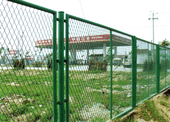
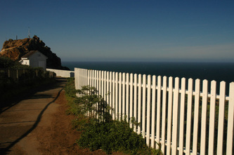
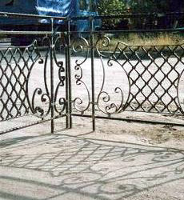
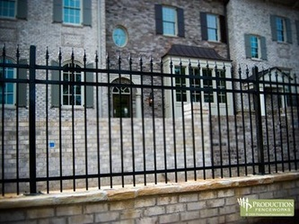
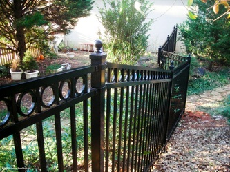
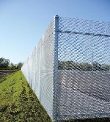
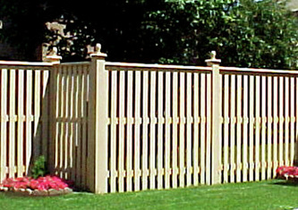
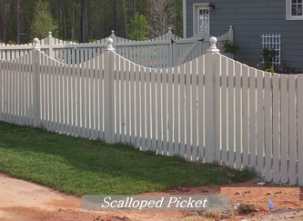
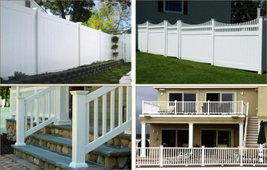

Rolling Gate - Installation, Repair and Maintenance
Rolling Gate - Installation, Repair and Maintenance
NJ Gates Fence affordable addition that bring the beauty of the outdoors indoors.
NJ Gates
offers a full selection of quality home fencing products that are available in a variety of sizes and styles from
wood fences to swimming pool fences to wrought iron fencing.
We provide
professional installation tailored to your specifications.
Choose the
right fence within your budget that will suit your needs and complement the beauty of your home.
Enhance your
enjoyment of your backyard or other outdoor space. Find peace and quiet in every part of your property. Your home is your castle.









Most Popular
Home Fences
Some of the most requested types of residential fences include:
- Wood Fences
- Chain Link Fences
- Vinyl Fences
- Composite Fences
- Ornamental Iron Fences
- Privacy Fences
- Swimming Pool Enclosures
Fencing Repairs
can repair and replace your current fencing whether or not we installed it originally. If your home’s fence has been damaged by weather, accidents, or simply old age, give us a call at 1-800-576-5919 to get your fence looking even better than ever.
Benefits of Fences Serving over 10,000 customers throughout NJ, CT & NY each year, NJ Gates receives calls about new fences for a variety of reasons, including:
- Give your children a safe place to play.
- Enclose your back or side yard to keep pets in and unwanted animals ou
- Fence in your front yard to control traffic and protect your landscaping.
- Add Old World charm at an affordable price with Ornamental Iron Fences.
- Enhance the beauty of your home with fence styles that will wow you and your neighbors.
- Construct an enclosure to mark your property boundaries. "Good Fences Make Good Neighbors."
- Complete sections of fence that were not previously installed between your neighbors or within your yard.
- Separate the back yard from the sides or front.
- Repair and spruce up old fences that still have plenty of years left before they need replacement.
- Replace older fences with new state-of-the-art maintenance free products.
- Give yourself some well-deserved privacy to better enjoy your own living space.
- Fence in your swimming pool to meet local codes while you add beauty to your personal recreation center.
Learn More about
Fencing from NJ Gates Fence uses the best quality products constructed by the most experienced craftsmen to assure your satisfaction. Traditional
wood, chain link and iron fence
as well as low maintenance products such as
vinyl fencing
are available from our large inventory. Select just the right fence for your specific needs.
We welcome your questions about fencing from NJ Gates. Click here for more details or call 1-800-576-5919. Your new fence is only a click or call away.
NJ Gates Enclosure Offerings Click on any of the above to view photos and learn more about that particular type of fence
New Jersey Gates repair , Rolling Gate repair storefront gate fin NJ gates repair install gate , gate operator , gate service , lubrication gates. roll up gate roll down gates new jersey gate 24/7 , 24 hour gate services